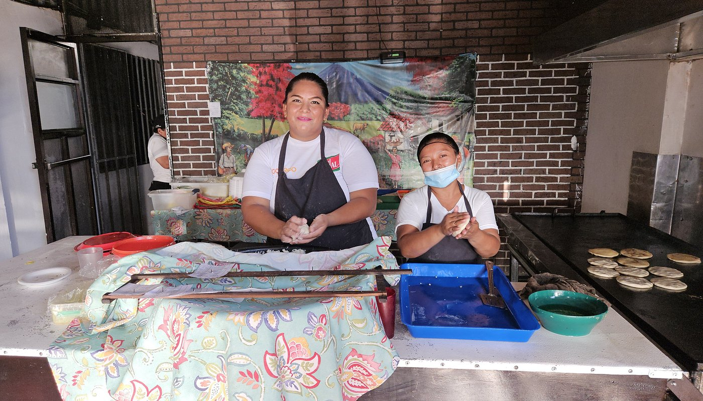

2003
El sueño que lo inicio todo
Esta franquicia comenzo como una pequeña inversion de una madre, que queria darle un futuro a sus hijos.
Con el tiempo el negocio avanzo enfocandose en innovar en los pequeños detalles. Detalles que hacian que este negocio resaltar de los demas.
Gracias a esfuerzo puro y buen analisis del mercado, este hermoso lugar se expandio a lo largo del pais.